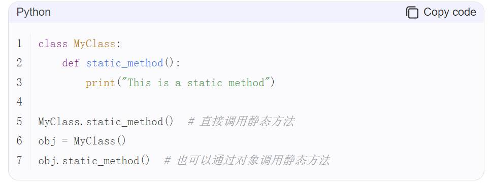
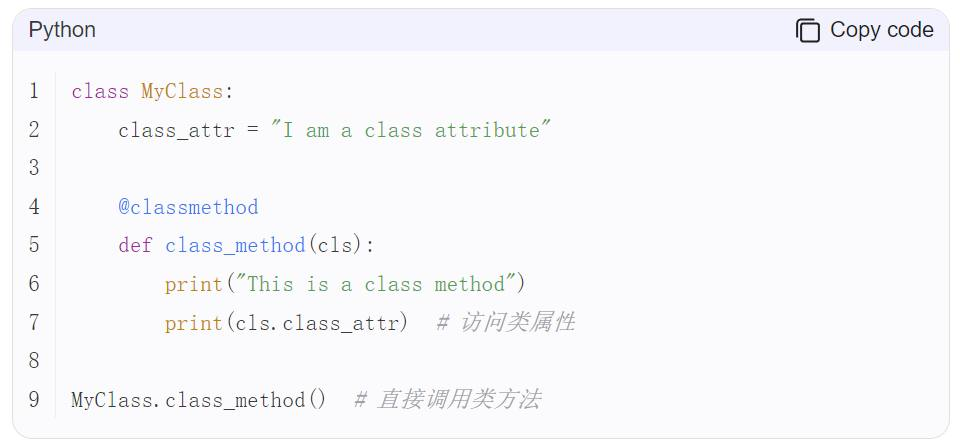

第 1 页 · 6.2 方法
6.2 方法
在类中定义的方法可以粗略分为四大类：公有方法、私有方法、静态方法和类方法。
私有方法的名字以两个下划线“_ _”开始，每个对象都有自己的公有方法和私有方法，在这两类方法中可以访问属于类和对象的成员；
公有方法通过对象名直接调用，私有方法不能通过对象名直接调用，只能在属于对象的方法中通过self调用或在外部通过Python支持的特殊方式来调用。
如果通过类名来调用属于对象的公有方法，需要显式为该方法的self参数传递一个对象名，用来明确指定访问哪个对象的数据成员。
1
第 2 页 · 6.2 方法
6.2 方法
在Python中，静态方法和类方法的主要区别在于它们如何访问类属性和实例属性。
1.静态方法：
静态方法是类的函数，不接受self参数，可以被类直接调用，也可以被类的对象调用。它不能访问类的任何属性或方法。
2

第 3 页 · 6.2 方法
6.2 方法
在Python中，静态方法和类方法的主要区别在于它们如何访问类属性和实例属性。
2.类方法：
类方法是类的函数，它的第一个参数是类本身，通常以cls作为参数名。类方法可以访问类的属性，但不能访问实例的属性。
3

第 4 页 · 6.2 方法
6.2 方法
3.对比：
静态方法和类方法的主要区别在于如何访问类属性和实例属性。静态方法不能访问类或实例属性，而类方法可以访问类属性。
4.总结：
静态方法：不需要访问类或实例属性。
类方法：需要访问类属性，不需要访问实例属性。
4
第 5 页 · >>> class Root:
>>> class Root:
_ _total = 0 #类属性
def _ _init_ _(self, v): #构造方法
self._ _value = v
Root._ _total += 1
def show(self): #普通实例方法，公有方法
print('self._ _value:', self._ _value)
print('Root._ _total:', Root._ _total)
@classmethod #修饰器，声明类方法
def classShowTotal(cls): #类方法
print(cls._ _total)
@staticmethod #修饰器，声明静态方法
def staticShowTotal(): #静态方法
print(Root._ _total)
6.2 方法
5
第 6 页 · 6.2 方法
6.2 方法
>>> r = Root(3)
>>> r.classShowTotal() #通过对象来调用类方法
1
>>> r.staticShowTotal() #通过对象来调用静态方法
1
>>> r.show()
self.__value: 3
Root.__total: 1
>>> rr = Root(5)
>>> Root.classShowTotal() #通过类名调用类方法
2
>>> Root.staticShowTotal() #通过类名调用静态方法
2
6
第 7 页 · 6.2 方法
6.2 方法
>>> Root.show() #试图通过类名直接调用实例方法，失败
TypeError: unbound method show() must be called with Root instance as first argument (got nothing instead)
>>> Root.show(r) #但是可以通过这种方法来调用方法并访问实例成员
self.__value: 3
Root.__total: 2
>>> Root.show(rr) #通过类名调用实例方法时为self参数显式传递对象名
self.__value: 5
Root.__total: 2
7